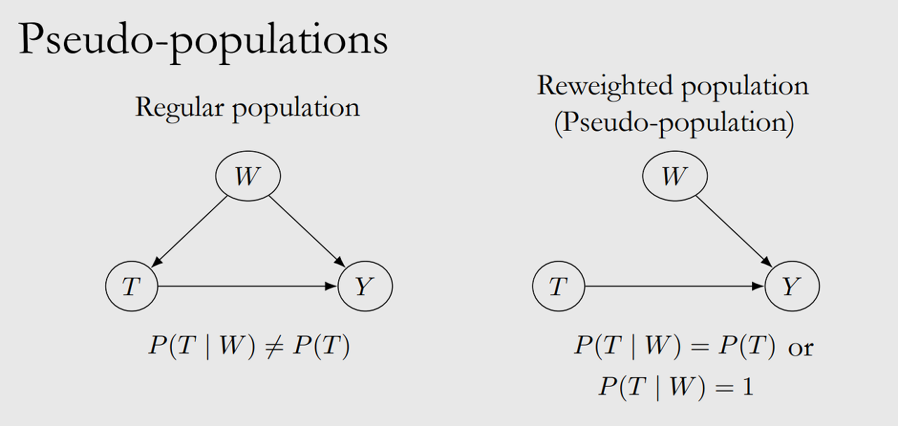

안녕하세요, 가짜연구소 Causal Inference 팀의 남궁민상입니다.
Introduction to Causal Inference 강의의 일곱 번째 챕터이며, 해당 챕터에서 다루는 내용은 아래와 같습니다.
Contents
- Conditional Average Treatment Effect
- Conditional Outcome Modeling
- TARNet & X-Learner
- Propensity Scores & IPW
- Other Methods
◦ 강의 영상 링크 : Chapter 6 - Estimation
작성된 내용 중 개선점이나 잘못된 부분이 있다면 댓글로 알려주세요!
CATE
ATE
\[[\tau(x) \overset{\Delta}{=}\mathbb{E}[Y(1)-Y(0)\,|\,X=x]]\]
Assuming uncounfoundedness and positivity
\[[\tau \overset{\Delta}{=} \mathbb{E}[Y(1)-Y(0)]=\mathbb{E}_W[\mathbb{E}[Y\,|\, T=1,W]-\mathbb{E}[Y\,|\, T=0,W]]]\]
Given W is a sufficient adjustment set
CATE
\[ \begin{aligned} \tau(x) &\overset{\Delta}{=} \mathbb{E}[Y(1)-Y(0)\,\|\,X=x] \\\ &=\mathbb{E}_W[\mathbb{E}[Y\,\|\, T=1,X=x,W]-\mathbb{E}[Y\,\|\, T=0,X=x,W]] \end{aligned} \]
given \(W \cup X\) is a sufficient adjustment set
[개념정리]
- unconfoundedness = conditional exchangeability(ignorability)
- \((Y(0),Y(1)) \perp T\,|\,X\)
- 이 조건으로 인해 potential outcome을 treatment에 conditioning할 수 있음\[ \begin{aligned} \mathbb{E}[Y(1)-Y(0)|X] &= \mathbb{E}[Y(1)|X]- \mathbb{E}[Y(0)|X] \\ &= \mathbb{E}[Y(1)|T=1,X]- \mathbb{E}[Y(0)|T=0,X] \\ &= \mathbb{E}[Y|T=1,X]- \mathbb{E}[Y|T=0,X] \end{aligned} \]
- positivity
- \(0<P(T=1\,|\,X=x)<1\), \(P(X=x)>0\), x for all \(x\)
COM
Target of modeling: the conditional expectations of CATE
- \(\mu(1,W) = \mathbb{E}[Y\,|\, T=1,W]\)
- \(\mu(0,W) = \mathbb{E}[Y\,|\, T=0,W]\)
일반적으로 사용하는 대부분의 예측모델 사용 가능
- COM estimation of ATE
[ = _i[(1,w_i)-(0,w_i)] ]
- COM estimation of CATE
\[ \begin{aligned} \tau(x) &\overset{\Delta}{=} \mathbb{E}[Y(1)-Y(0)\,|\,X=x] \\ &=\mathbb{E}_W[\mathbb{E}[Y\,|\, T=1,X=x,W]-\mathbb{E}[Y\,|\, T=0,X=x,W]] \end{aligned}\]
target of modeling:
\[ \mu(t,x,w) \overset{\Delta}{=}\mathbb{E}[Y\,|\, T=t,X=x,W=w] \]
COM estimator of CATE:
\[ \hat\tau(x) = \frac{1}{n_x}\sum_{i:x_i=x}[\hat\mu(1,x,w_i)-\hat\mu(0,x,w_i)] \]
Problem with COM estimation in high dimensions
- 매우 차원이 높은 (input 변수가 많은) 경우, T의 영향력이 다른 변수 W들에 비해 크지 않으면 T에 대한 weight 역시 매우 작은 값으로 추정된다.
- \(\hat\mu(1,w_i)-\hat\mu(0,w_i)\) 가 0에 매우 가까워짐
- 결론: 실제 treatment effect가 존재하더라도, scale의 차이 때문에 treatment 추정치는 0에 편향될 수 있음
Solution: Grouped COM (GCOM) estimation
- COM: \(\hat\tau = \frac{1}{n}\sum_i[\hat\mu(1,w_i)-\hat\mu(0,w_i)]\)
- GCOM: \(\hat\tau = \frac{1}{n}\sum_i[\hat\mu_1(w_i)-\hat\mu_0(w_i)]\)
GCOM의 경우, T는 모델의 input으로 들어가지 않음
Problem: models have higher variance than they would if they were trained with all the data (since the splitted data might not efficient)
Increasing Data Efficiency: TARNet & X-Learner
TARNet

- NN 기반인거 같은데,
- 중간 모델: treatment-agnostic model; \(\hat \mu\)
- branch model: treatment-specific model; T=1 데이터, T=0인 데이터만으로 학습됨
- 전체 모델이 모든 데이터를 활용해 학습되는 것이 아니므로 여전히 data inefficiency 존재
X-Learner
- Estimate \(\hat \mu_1(x)\) and \(\hat \mu_0(x)\) (assume \(X\) is a sufficient adjustment set and is all observed covariates)
- Impute ITEs
- Treatment group: \(\hat \tau_{1,i}= Y_i(1)-\hat \mu_0(x_i)\)
- Control group: \(\hat \tau_{0,i}= \hat \mu_1(x_i) - Y_0(1)\)
- Fit a model \(\hat \tau_1(x)\) to predict \(\hat \tau_{1,i}\) from \(x_i\) in treatment group Fit a model \(\hat \tau_0(x)\) to predict \(\hat \tau_{0,i}\) from \(x_i\) in control group → \(\hat \tau_1(x)\), \(\hat \tau_0(x)\)는 treatment/control group의 모든 데이터를 사용한 모델 (GCOM의 문제 해결)
- \(\hat \tau(x)=g(x)\hat \tau_0(x) + (1-g(x))\hat \tau_1(x)\) where \(g(x)\) is a weight function btw 0 and 1 (e.g., propensity score)
Propensity Score & IPW
지금까지는 \(\mu(t,w)\)를 모델링하여 estimation을 했습니다. 그 다음으로는 경향 점수(propensity score)라는 것을 이용한 estimation을 알아봅시다.
경향 점수(Propensity score)란?
수학적으로 말하자면 경향 점수 \(e(w)\)는 다음과 같은 스칼라 값입니다.
\[ e(w) \triangleq P(T=1\:|\:W=w) \]
우리가 \(W=w\)인 임의의 사례를 골랐을 때, 해당 케이스가 처치 집단\((T=1)\)일 조건부 확률이죠.
그리고 propensity score theorem에 따르면 다음과 같은 식이 성립합니다.
\[ (Y(1), Y(0))\:{\perp \!\!\! \perp}\:T\:|\:W \Rightarrow (Y(1), Y(0))\:{\perp \!\!\! \perp}\:T\:|\:e(W) \]
문자 그대로 풀어 쓰자면, \(W\)를 conditioning 했을 때 positivity, unconfoundedness가 성립한다면, \(e(W)\)를 conditioning 했을 때도 positivity, unconfoundedness가 성립한다는 정리입니다.
이게 왜 중요할까요? Chapter 2에서, ATE가 association difference와 같아지려면 positivity, unconfoundedness가 성립해야 했습니다. Propensity score Theorem에 따르면 \(W\)를 conditioning 해서 ATE를 구할 수 있다면, \(e(W)\)를 conditioning 했을 때도 ATE를 구할 수 있게 된 거죠!
아래 그래프를 보면 이해가 쉽습니다.

왼쪽 그림에서 \(W\)는 \(T\)에 causal effect를 가집니다. 그 effect는 \(e(W)\)와 같으므로 오른쪽과 같이 그릴 수도 있겠죠? (\(e(W)\)가 \(W \rightarrow T\)의 full mediator)
따라서 \(W\)를 conditioning해서 backdoor를 막을 수 있다면, \(e(W)\)를 conditioining해서도 같은 효과를 가지게 됩니다.
물론 수식을 길게 늘어놓아 증명할 수도 있습니다!
\[ \begin{aligned}P(T=1\:|\:Y(t),\:e(W))\:&=\:E[T \:|\:Y(t),\:e(W)] \\ &=E[E[T \:|\:Y(t),\:e(W),W]\:|\:Y(t),e(W)] \\ &= E[E[T \:|\:Y(t),W]\:|\:Y(t),e(W)] \\ &= E[E[T \:|\:W]\:|\:Y(t),e(W)] \\ &= E[P(T=1\:|\:W)\:|\:Y(t),e(W)] \\ &= E[e(W)\:|\:Y(t),e(W)] \\ &= e(W)\end{aligned} \]
이 값이 \(Y(t)\)와 독립이므로\((Y(1), Y(0)){\perp \!\!\! \perp}T\|e(W)\)입니다.

앞선 챕터에서 positivity-unconfoundedness tradeoff를 이야기했는데, 기억 나시나요?.
비교집단과 처치집단을 제대로 비교하려면 같은 \(W\)를 가진 집단을 비교해야 합니다. 그런데 \(W\)의 차원이 높아지면 positivity가 심각하게 줄어들죠.
그런데 \(W\)의 차원이 아무리 높아져도 \(e(W)\)는 1차원의 스칼라입니다. 따라서 \(e(W)\)를 conditioning하면 이 문제를 마법처럼 해결할 수 있는 거죠! 와!
물론 세상은 그렇게 아름답지 않습니다. 대부분의 경우에 우리는 \(e(W)\) 함수를 알 수 없거든요. 보통은 모델을 학습시켜 \(e(W=w)\)를 구합니다.
기억합시다!
경향 점수는 covariate로부터 계산하는 스칼라값입니다. unbiased estimate of ATE를 구하고 싶을 때, 고차원의 \(W\)를 conditioning하는 대신 1차원의 \(e(W)\)를 conditioning하여 같은 효과를 얻을 수 있습니다.
Inverse Probability Weighting
다음으로 IPW에 대해 알아봅시다. 관측을 통해 association은 쉽게 계산할 수 있습니다. 하지만 우리가 원하는 것은 이로부터 causation을 뽑아내는 것이죠. 그런데 association == causation이도록 데이터를 resampling하는 방법이 있습니다.

\(W\rightarrow T\)의 인과가 존재한다는 것은 \(T\)의 분포가 \(W\)에 의해 영향을 받는다는 뜻이죠. 수학적으로 나타내자면 \(P(T\:|\:W) \neq P(T)\). 그렇다면 이를 뒤집으면 어떨까요?
- \(P(T\:|\:W) = P(T)\)인 경우
- \(P(T\:|\:W)\)가 상수인 경우
위와 같은 경우에는 \(W\)가 \(T\)의 분포에 영향을 주지 않습니다. 따라서 \(T\)와 \(Y\) 사이의 association은 곧 causation이겠죠.
정리!
\(P(T|W)\)가 상수라면 \(W=w\) 값이 바뀌어도 \(T=t\)의 분포에 영향을 주지 않습니다. 따라서, 데이터에 \(\frac{1}{P(t|W)}\)를 곱해 만든 pseudo-population에서는 \(W\rightarrow (T=t)\)의 인과가 끊어집니다. (이 pseudo-population에서의
\(P(T=t|W)=1\)이니까요)
그래서 \((T=t) \rightarrow Y\)의 인과를 계산할 수 있습니다.
이를 수학적으로 나타내면
\[ E[Y(t)]=E[\frac{\mathbb{1}(T=t)\:Y}{P(t|W)}] \]
마찬가지로 수식으로 증명할 수도 있습니다!
\[ \begin{aligned} E[Y(t)] &= E[E[Y\:|\:t,W]] \\ &= \sum_{w}{(\sum_{y}{yP(y\:|\:t,w)})P(w)} \\ &= \sum_{w}{\sum_{y}{yP(y\:|\:t,w)}P(w)\frac{P(t\:|\:w)}{P(t\:|\:w)}} \\ &= \sum_{w}{\sum_{y}{yP(y,t,w)}\frac{1}{P(t\:|\:w)}} \\ &= \sum_{w}{E[1(T=t,W=w)Y]\frac{1}{P(t|w)}} \\ &= E[\frac{1(T=t)\:Y}{P(t|W)}]\end{aligned} \]
그런데 잠깐, re-weighting할 때 쓰는 \(P(T=t\:|\:W)\)를 봅시다. 어딘가 익숙한데요?
Treatment가 binary하다면
\[ P(T=1\:|\:W)=e(W) \\ P(T=0\:|\:W)=1-e(W) \]
즉, 경향점수를 이용해 IPW를 할 수 있습니다!
IPW 적용하기
binary treatment를 가정했을 때, ATE의 identification equation은 경향점수를 이용해 아래와 같이 다시 쓸 수 있습니다.
\[ \tau \triangleq E[Y(1)-Y(0)]=E[\frac{1(T=1)Y}{e(W)}]-E[\frac{1(T=0)Y}{1-e(W)}] \]
이 때, 경향점수가 0이나 1에 아주 가까우면 estimate이 무한대로 발산하게 되죠. 따라서, 적당한 값으로 trim을 하기도 합니다. 물론 이 경우 bias와 같은 문제는 각오해야 합니다.
위의 식을 확장해 CATE에 대한 IPW estimator를 만들 수도 있습니다.
\[ \hat{\tau}(x)=\frac{1}{n_x}\sum_{i:x_i = x}{(\frac{1(t_i=1)y_i}{\hat{e}(w_i)}-\frac{1(t_i=0)y_i}{1-\hat{e}(w_i)})} \]
다만 이 식을 그대로 사용하면 데이터가 많지 않아 variance가 커진다는 문제가 생깁니다. 더 general한 CATE IPW estimator도 있지만 본 강의에서는 다루지 않겠다네요.
또 다른 방법들…
이번 장에서는 causal effect estimation을 위해 사용할 수 있는 방법을 두 가지 소개했습니다.
- \(\mu(t,w) \triangleq E[Y|t,w]\)를 모델링하는 방법
- \(e(w) \triangleq P(T=1|w)\)을 모델링하는 방법
마지막으로 여기서 더 나아간 estimation 방법들을 소개합니다.
Doubly Robust Methods
\(\mu(t,w)\)와 \(e(w)\)를 둘 다 모델링하는 방법. 이 방법은 다음과 같은 장점이 있습니다.
- \(\hat{\mu}(t,w)\) 또는 \(\hat{e}(w)\) 중 하나만 consistent해도 전체 estimator가 consistent합니다 (doubly robust)
- 이론상으로는 \(\tau\)에 수렴하는 속도가 COM이나 IPW보다 빠릅니다 (\(\hat{\mu} \rightarrow \mu\)의 수렴 속도 \(\times \: \hat{e} \rightarrow e\)의 수렴 속도이기 때문)
다만 \(\hat{\mu}\)나 \(\hat{e}\)가 well-specified 되지 않았을 때 얼마나 잘 작동하는지 논란이 있습니다.
Matching

Treatment group과 control group에서 비슷한 사례들만 비교하는 방법입니다. ’비슷함’이 무엇을 의미하냐는 실험 설계에 따라 여러 방법으로 결정하시면 됩니다.
Double Machine Learning

Double machine learning 기법에서는 3가지의 모델을 학습시킵니다.
Stage 1:
- \(W\)로부터 \(T\)에 대한 예측값 \(\hat{T}\)을 생성하는 모델
- \(W\)로부터 \(Y\)에 대한 예측값 \(\hat{Y}\)을 생성하는 모델
Stage 2:
- \((T-\hat{T})\)로부터 \((Y-\hat{Y})\)에 대한 예측값을 생성하는 모델
이 방법에서는 \((T-\hat{T})\)과 \((Y-\hat{Y})\)를 보아 \(W\)를 partial out합니다.
Causal Trees and Forests

decision tree와 비슷하게 데이터를 재귀적으로 나눔으로써 같은 treatment effect를 가진 subset들을 만드는 기법입니다.
참고자료
Citation
@online{namgoong2024,
author = {Namgoong, Minsang},
title = {08\textbackslash. {Estimation}},
date = {2024-01-08},
url = {https://github.com/CausalInferenceLab/Causal-Inference-Study-for-Analyst/posts/Introduction_to_causal_inference_Estimation/Estimation.html},
langid = {en}
}